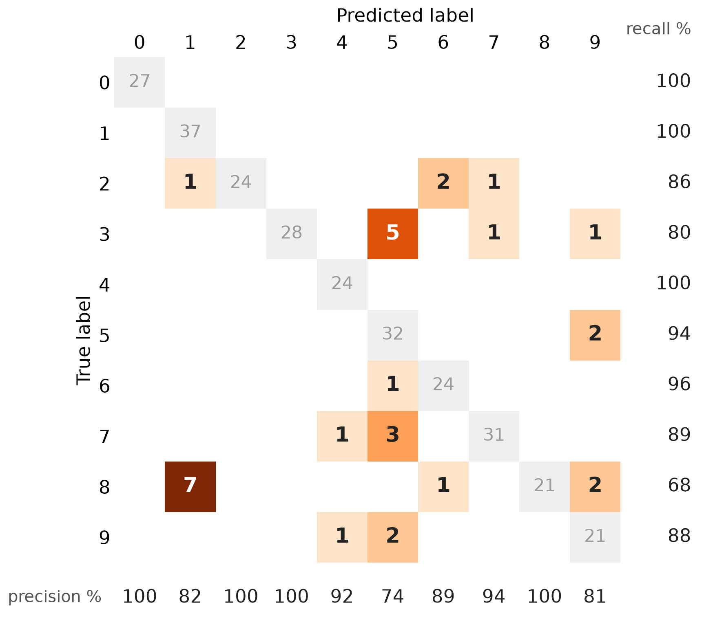
Model Assessment and Evaluation
DS-GA 3001 - Fall 2026
Claudio Silva
NYU Center for Data Science
2026-09-22
Model Assessment
Agenda
Confusion Matrices and ROC Curves
Visual Analytics Systems for Model Performance
Calibration
Confusion Matrices, ROC Curves
Scenario: Disease Prediction
Consider a disease prediction model. Suppose the hypothetical disease has a 5% prevalence in the population
The given model converges on the solution of predicting that nobody has the disease (i.e., the model predicts “0” for every observation)
Our model is 95% accurate
Yet, public health officials are stumped
Scenario: Handwritten Digits
Consider a model to identify handwritten digits. All digits are equally probable and equally represented in the training and test datasets.
The model correctly identifies all of the digits, except for digit \(5\), classifying half of the \(5\)s samples as \(6\) and the other half is correctly identified
The accuracy of this model is \(95\%\). Is this information enough to determine whether the model is good or not?
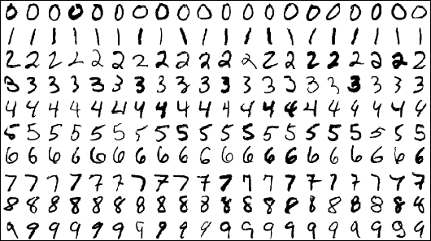
Extended Confusion Matrix
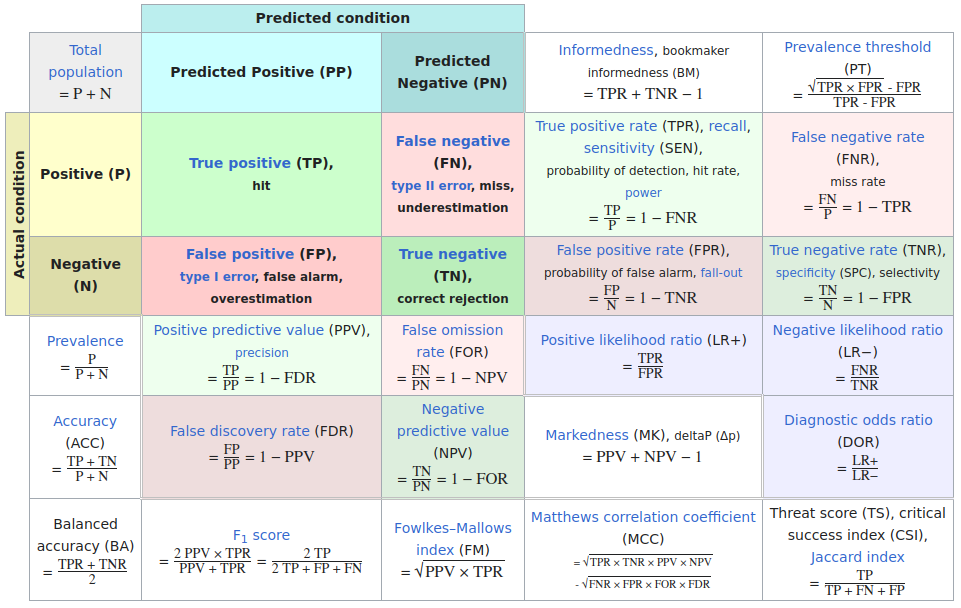
Table from Wikipedia: Confusion matrix
Confusion Matrices: A Deeper Look
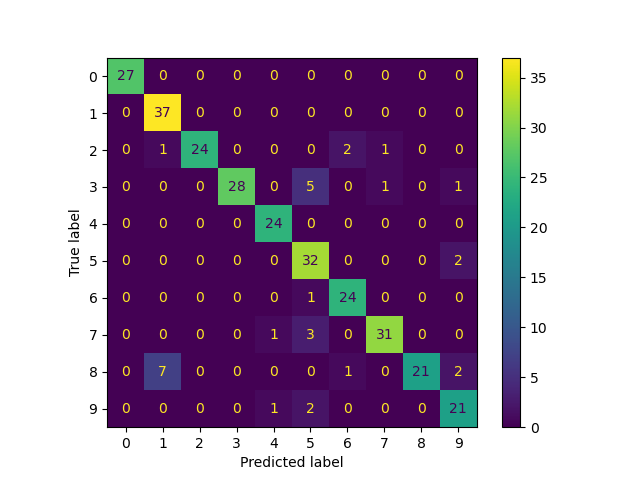
scikit-learn digits: label spreading trained on 40 labelled images, tested on 300 (accuracy 90%)
Reading it: rows are the true label, columns the predicted label. The diagonal is correct.
Pros
- Shows which classes are confused, not just how many errors
- Precision, recall and F1 for every class can be read off it
Cons
- Scales badly: 100 classes means 10,000 cells
- Drops the scores: “barely wrong” and “confidently wrong” count the same
- Hides the instances behind each count
Squares, Neo and the confusion wheel, later today, each attack one of these.
Confusion Matrices: Spend the Colour on the Errors
- Same matrix. The diagonal is now grey: colour is spent only on mistakes
- Right margin: recall per true class. Bottom margin: precision per predicted class
- 8 is the weakest class (68% recall); 5 is a sink that absorbs 3s, 7s, 9s and a 6 (74% precision)
Confusion Matrices in sklearn
from sklearn import datasets
from sklearn.linear_model import LogisticRegression
from sklearn.model_selection import train_test_split
X,y = datasets.make_classification(5000, 10, random_state=42)
X_train, X_test, y_train, y_test = train_test_split(X, y, random_state=42)
clf = LogisticRegression(random_state=0)Neo: Hierarchical Confusion Matrix
Görtler, J., Hohman, F., Moritz, D., et al. (2022). Neo: Generalizing Confusion Matrix Visualization to Hierarchical and Multi-Output Labels. CHI.
Receiver Operating Characteristic (ROC)
ROC analysis is another way to assess a classifier’s output
ROC analysis developed out of radar operation in the second World War, where operators were interested in detecting signal (enemy aircraft) versus noise
We create an ROC curve by plotting the true positive rate (TPR) against the false positive rate (FPR) at various thresholds
True Positive Rate (TPR), also known as Recall or Sensitivity, is the proportion of actual positives that are correctly identified as such (TP / (TP + FN)).
False Positive Rate (FPR) is the proportion of actual negatives that are incorrectly identified as positive (FP / (FP + TN)).
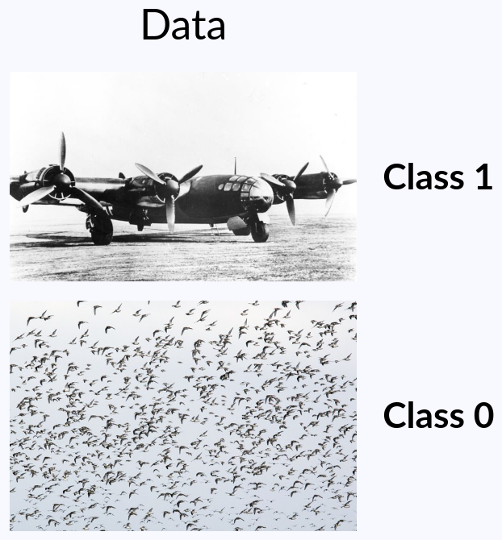
ROC Curve
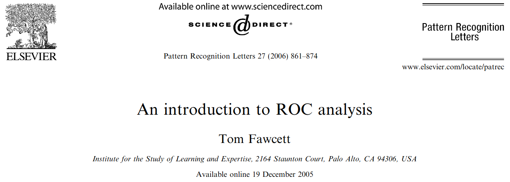
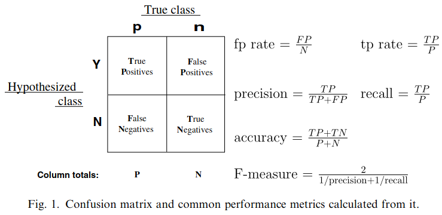
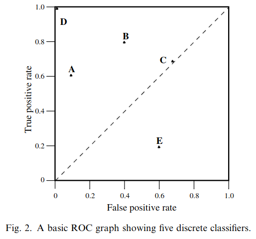
Fawcett, T. (2006). An introduction to ROC analysis. Pattern Recognition Letters, 27(8), 861-874.
ROC Curve
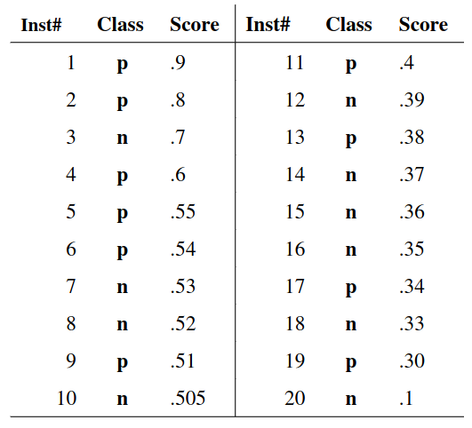
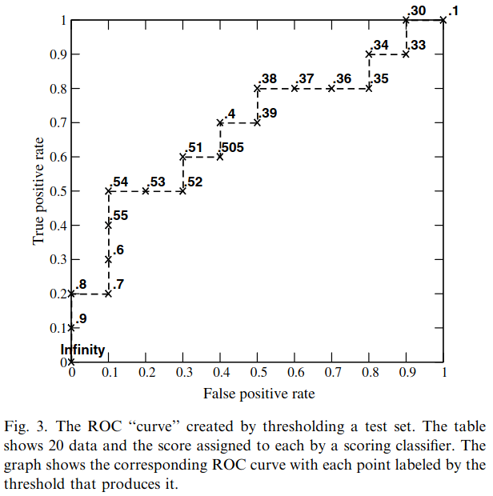
Fawcett, T. (2006). An introduction to ROC analysis. Pattern Recognition Letters, 27(8), 861-874.
ROC Curve
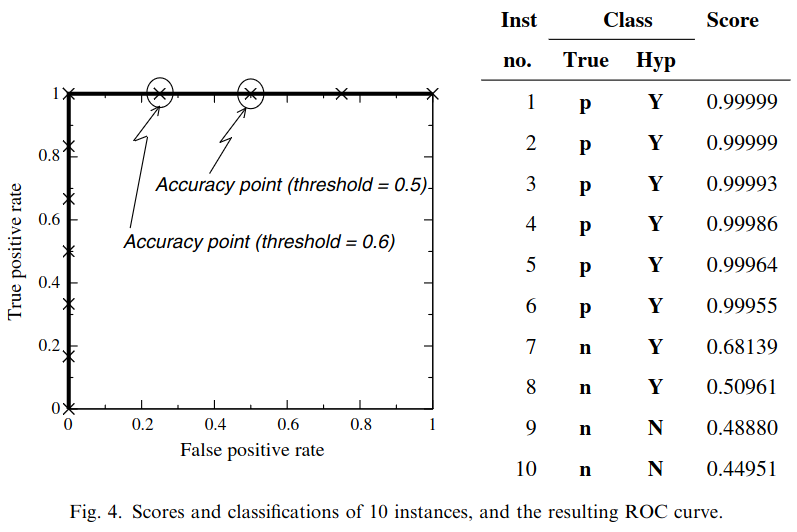
Fawcett, T. (2006). An introduction to ROC analysis. Pattern Recognition Letters, 27(8), 861-874.
Area under an ROC curve (AUC)
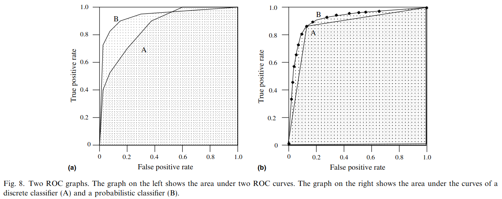
Fawcett, T. (2006). An introduction to ROC analysis. Pattern Recognition Letters, 27(8), 861-874.
ROC curve in sklearn
Multiclass ROC curve
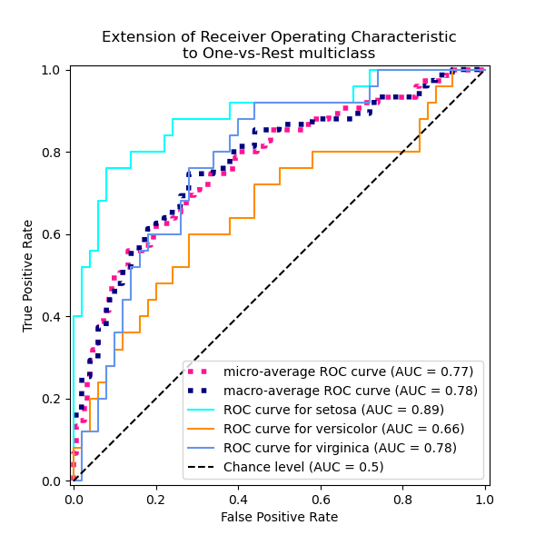
Micro-average: Pool every one-vs-rest decision into a single curve. Each sample counts equally, so the large classes dominate.
Macro-average: Compute a curve per class, then average them. Each class counts equally, so a small, badly served class still shows up.
ROC Curves: Strengths and Limitations
- What they show: True Positive Rate (TPR) vs. False Positive Rate (FPR)
- Insensitive to class balance: by design, since TPR and FPR each stay within one true class. The curve is the same whatever the prevalence
- Limitation: it never shows precision. At low prevalence a tiny FPR still means most positive predictions are wrong, and the plot gives no warning
Precision-Recall (PR) Curves
- What they show: Precision (TP / predicted positive) against Recall (TP / actual positive), as the threshold sweeps
- Three cells, not four: PR uses TP, FP and FN, and ignores the true negatives. It describes the positive class only
- Chance is not the diagonal: the baseline is a horizontal line at the positive rate, so it drops as positives get rarer
- Summary number: average precision (AP), the area under the curve
- Advantage: high precision and high recall really is a good model: it finds the positives and most of what it flags is right
Davis, J., & Goadrich, M. (2006). The relationship between Precision-Recall and ROC curves. ICML. Saito, T., & Rehmsmeier, M. (2015). The precision-recall plot is more informative than the ROC plot on imbalanced datasets. PLOS ONE.
Precision-Recall curve in sklearn
Visual Analytics Systems for Model Performance
Squares (2016)
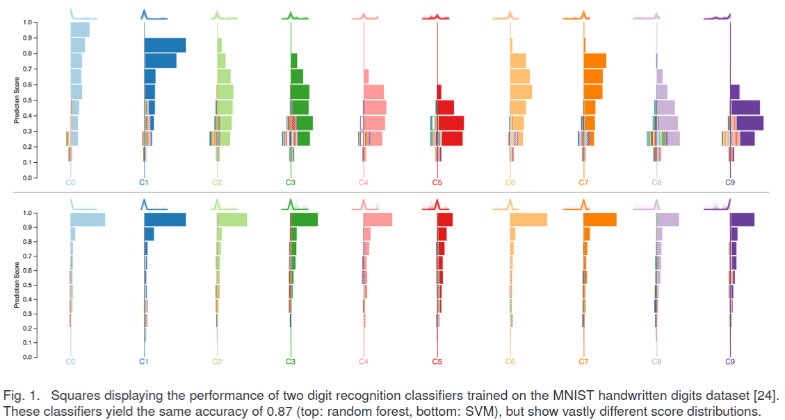
Ren, D., Amershi, S., Lee, B., Suh, J., & Williams, J. D. (2016). Squares: Supporting interactive performance analysis for multiclass classifiers. IEEE TVCG.
Alsallakh et al. (2014)
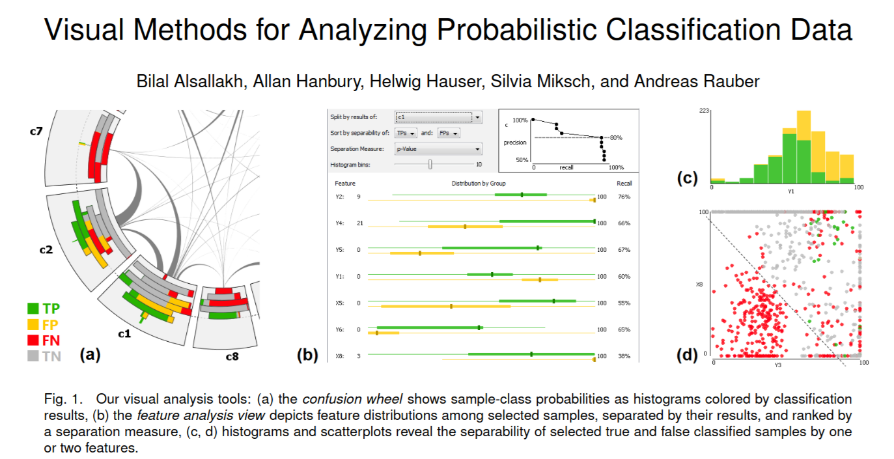
Alsallakh, B., Hanbury, A., Hauser, H., Miksch, S., & Rauber, A. (2014). Visual methods for analyzing probabilistic classification data. IEEE TVCG.
Alsallakh et al. (2014)
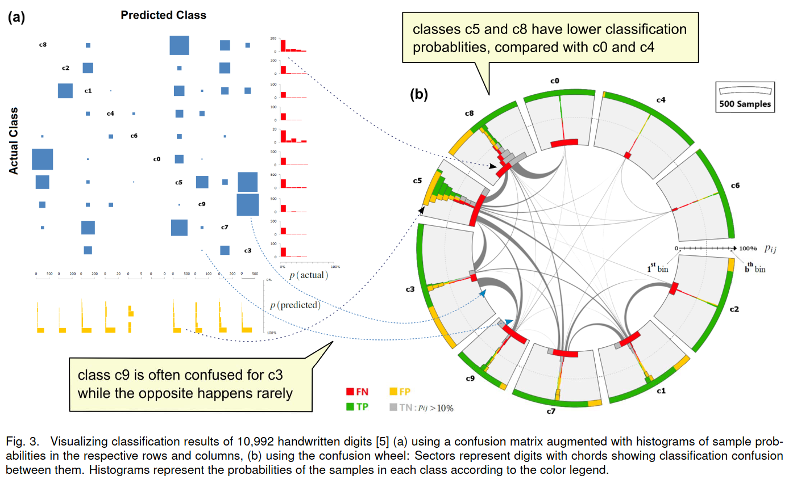
Alsallakh, B., Hanbury, A., Hauser, H., Miksch, S., & Rauber, A. (2014). Visual methods for analyzing probabilistic classification data. IEEE TVCG.
Beauxis-Aussalet and Hardman (2014)
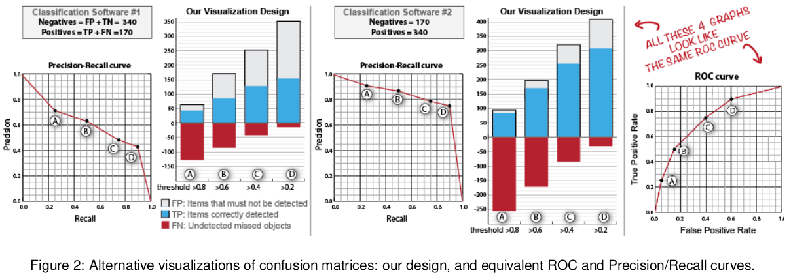
Beauxis-Aussalet, E., & Hardman, L. (2014). Visualization of confusion matrix for non-expert users. IEEE VAST.
Beauxis-Aussalet and Hardman (2014)
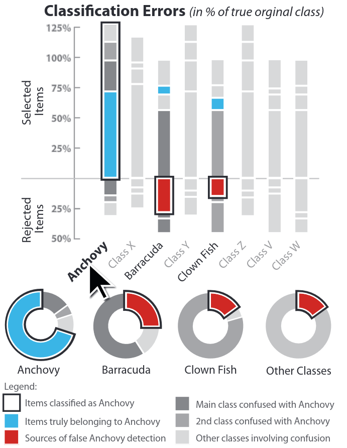
Beauxis-Aussalet, E., & Hardman, L. (2014). Visualization of confusion matrix for non-expert users. IEEE VAST.
EnsembleMatrix (2009)
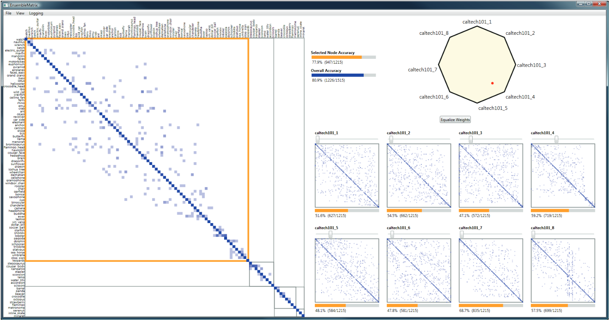
Talbot, J., Lee, B., Kapoor, A., & Tan, D. S. (2009). EnsembleMatrix: interactive visualization to support machine learning with multiple classifiers. CHI.
Calibration
What is calibration?
When performing classification, we often are interested not only in predicting the class label, but also in the probability of the output
This probability gives us a kind of confidence score on the prediction
However, a model can separate the classes well (having a good accuracy/AUC), but be poorly calibrated. In this case, the estimated class probabilities are far from the true class probabilities
We can calibrate the model, changing the scale of the predicted probabilities
Calibration - Forecast Example
Weather forecasters started thinking about calibration a long time ago (Brier, 1950): a forecast of “70% chance of rain” should be followed by rain 70% of the time. Let’s consider a small toy example:
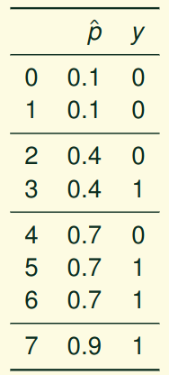
This forecast is doing well at predicting the rain:
- “10% chance of rain” was a slight over-estimate: \((\bar{y} = 0/2 = 0\%)\)
- “40% chance of rain” was a slight under-estimate: \((\bar{y} = 1/2 = 50\%)\)
- “70% chance of rain” was a slight over-estimate: \((\bar{y} = 2/3 = 67\%)\)
- “90% chance of rain” was a slight under-estimate: \((\bar{y} = 1/1 = 100\%)\)
Slides based on classifier-calibration.github.io
Visualizing forecasts - The Reliability Diagram
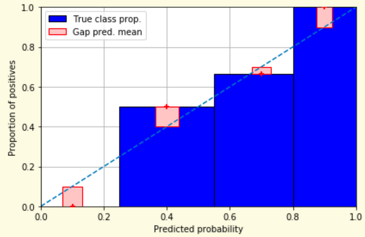
Slides based on classifier-calibration.github.io
Reliability diagram - Changing values
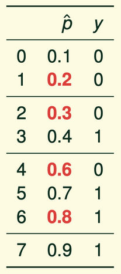
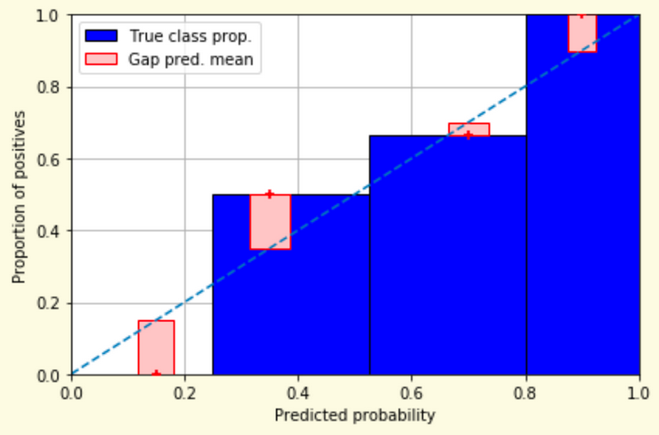
Slides based on classifier-calibration.github.io
Reliability diagram - Changing grouping
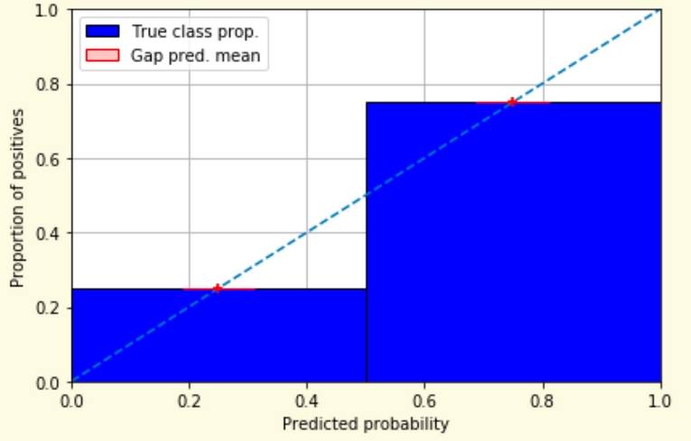
Slides based on classifier-calibration.github.io
Reliability Diagram in sklearn
import matplotlib.pyplot as plt
from sklearn.calibration import CalibrationDisplay
fig = plt.figure()
ax = fig.add_subplot(111)
CalibrationDisplay.from_estimator(lg, X_test, y_test, n_bins=10, ax=ax,
label='Logistic Regression')
CalibrationDisplay.from_estimator(nb, X_test, y_test, n_bins=10, ax=ax,
label='Naive Bayes')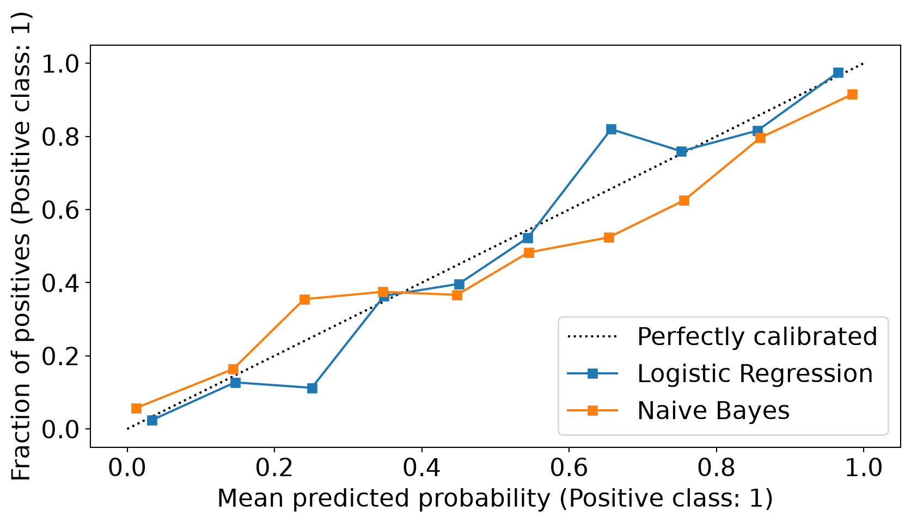
Common sources of miscalibration
Underconfidence: a classifier thinks it’s worse at separating classes than it actually is.
- Underconfidence typically gives sigmoidal distortions
- To calibrate these means to pull predicted probabilities away from the centre
Overconfidence: a classifier thinks it’s better at separating classes than it actually is
- Here, distortions are inverse-sigmoidal
- Calibrating these means to push predicted probabilities toward the centre
A classifier can be overconfident for one class and underconfident for the other
Slides based on classifier-calibration.github.io
Reliability Diagram in sklearn
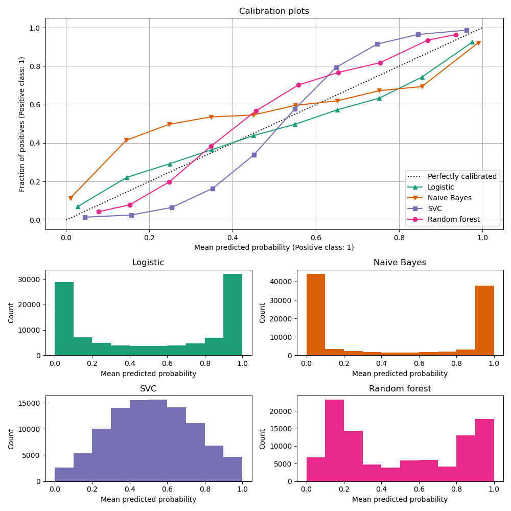
Calibration metrics
Let \(N\) be the total number of samples, \(B\) the number of bins, \(n^b\) the samples in bin \(b\), \(acc(b)\) the fraction of positives in bin \(b\), and \(conf(b)\) the average predicted probability in bin \(b\).
- Expected Calibration Error:
\(ECE = \sum_{b=1}^B \frac{n^b}{N}|acc(b) - conf(b)|\)
- Maximum Calibration Error:
\(MCE = \underset{b \in \{1,2,\dots,B\}}{\text{max}} |acc(b) - conf(b)|\)
Perfectly Calibrated, and Useless
Predict the base rate for everyone: “there is a 5% chance you have the disease”, for every patient alike
Every group’s observed frequency matches its prediction, so ECE = 0 and the reliability diagram sits on the diagonal
Yet it ranks nobody above anybody: AUC = 0.5, and it never identifies a single patient
Calibration is being right on average; sharpness is committing to a prediction. A useful model needs both
Recalibration can repair a sharp but miscalibrated model. Nothing repairs an unsharp one
Calibration of modern models
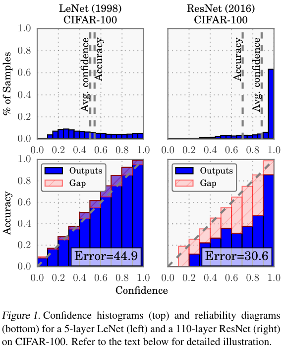
Guo, C., Pleiss, G., Sun, Y., & Weinberger, K. Q. (2017). On calibration of modern neural networks. ICML.
Calibration of modern models
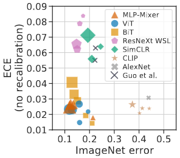
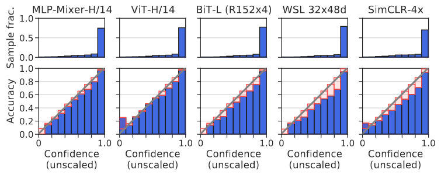
Architecture and pre-training, not size, drive calibration: ViT and MLP-Mixer are both the most accurate and among the best calibrated. In-distribution, calibration degrades slightly with size; under distribution shift the effect reverses
Image taken from Minderer, Matthias, et al. (2021). Revisiting the calibration of modern neural networks. Advances in Neural Information Processing Systems.
Is the 2017 Story Still True?
The observation held: those CNNs really were overconfident, and temperature scaling really does fix them cheaply
The extrapolation did not. A benchmark over 117,000 architectures finds no universal accuracy-calibration trade-off, and attributes “calibration decreases with model size” to survivorship bias in the 2017 model grid
The direction has flipped for foundation models: ConvNeXt, EVA and BEiT come out underconfident in-distribution, though better calibrated under distribution shift
For LLMs: pre-trained next-token probabilities are close to calibrated; SFT and RLHF degrade that. For RLHF’d models, asking for a stated confidence often beats the token probabilities
So: measure calibration for your model on your distribution. Do not inherit a trend from a paper
Tao, L. et al. (2024). A Benchmark Study on Calibration. ICLR. Hekler, A. et al. (2025). Beyond Overconfidence. arXiv preprint. Tian, K. et al. (2023). Just Ask for Calibration. EMNLP.
Proper Scoring Rules
Proper scoring rules are calculated at the observation level, whereas ECE is binned
Think of them as putting each item in its separate bin, then computing the average of some loss for each predicted probability and its corresponding observed label
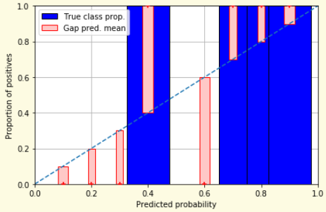
Slides based on classifier-calibration.github.io
What Makes a Scoring Rule Proper?
You believe \(q\), you report \(p\). Your expected score is \(\ q\,S(p,1) + (1-q)\,S(p,0)\)
Proper: \(p = q\) is optimal. Strictly proper: \(p = q\) is the only optimum, so honesty is uniquely best
Accuracy is not strictly proper. Believing 0.6, claiming \(1.0\) scores exactly the same: every report above \(0.5\) ties. It cannot tell \(0.51\) from \(0.99\)
Absolute error \(|p - y|\) is worse: its expectation \(q + p(1 - 2q)\) is linear in \(p\), so the unique optimum is \(p = 0\) or \(1\). It pays you to overclaim
A metric that is indifferent to your uncertainty, or rewards overstating it, cannot judge probabilities. Next: two that do neither
Proper Scoring Rules
- Brier Score/Quadratic error/Euclidean distance:
\[BS = \frac{1}{N} \sum_{i=1}^N (\hat{y}_i - y_i)^2\]
Log-loss/Cross entropy:
Frequently used as the training loss of machine learning methods, such as neural networks
Only penalises the probability given to the true class
\[LL = -\frac{1}{N} \sum_{i=1}^N [y_i \text{log}(\hat{y}_i) + (1-y_i)\text{log}( 1 - \hat{y}_i)]\]
Slides based on classifier-calibration.github.io
Proper Scoring Rules
An intuitive way to decompose proper scoring rules is into refinement and calibration losses
Refinement loss: is the loss due to producing the same probability for instances from different classes
Calibration loss: is the loss due to the difference between the probabilities predicted by the model and the proportion of positives among instances with the same output
Slides based on classifier-calibration.github.io
Calibration Techniques
Parametric calibration involves modelling the score distributions within each class
Platt scaling: Logistic calibration can be derived by assuming that the scores within both classes are normally distributed with the same variance (Platt, 2000)
Beta calibration: employs Beta distributions instead, to deal with scores already on a [0, 1] scale (Kull et al., 2017)
Dirichlet calibration for more than two classes (Kull et al., 2019)
Non-parametric calibration often ignores scores and employs ranks
- Isotonic regression fits a non-parametric isotonic regressor, which outputs a step-wise non-decreasing function
Slides based on classifier-calibration.github.io
Platt scaling
- Assumes the calibration curve can be corrected by applying a sigmoid to the raw predictions. This means finding \(\mathbf{A}\) and \(\mathbf{b}\) via MLE:
\(p(y_i = 1 | \hat{y}_i) = \frac{1}{1 + exp(\mathbf{A}\hat{y}_i + \mathbf{b})}\)
Works best if the calibration error is symmetrical (classifier output for each binary class is normally distributed with the same variance)
This can be a problem for highly imbalanced classification problems, where outputs do not have equal variance
In general it is most effective when the un-calibrated model is under-confident and has similar calibration errors for both high and low outputs
Isotonic regression
Fits a non-parametric isotonic regressor, which outputs a step-wise non-decreasing function
Isotonic regression is more general when compared to Platt scaling, as the only restriction is that the mapping function is monotonically increasing
Is more powerful as it can correct any monotonic distortion of the un-calibrated model
However, it is more prone to overfitting, especially on small datasets
Temperature Scaling
- Guo et al.’s fix for a modern network: divide the logits by a single learned scalar \(T\) before the softmax
\[\hat{q}_i = \max_k \ \sigma_{SM}(z_i / T)^{(k)}\]
\(T > 1\) softens the distribution (raises its entropy); \(T = 1\) leaves the network unchanged; \(T \to \infty\) gives uniform
\(T\) is fitted by minimising NLL on a held-out validation set. The network’s weights are never touched
Dividing every logit by the same number cannot change which one is largest, so accuracy is unchanged
One parameter, so it rarely overfits: the special case of Platt scaling used for deep nets today
Guo, C., Pleiss, G., Sun, Y., & Weinberger, K. Q. (2017). On calibration of modern neural networks. ICML.
Calibration in sklearn
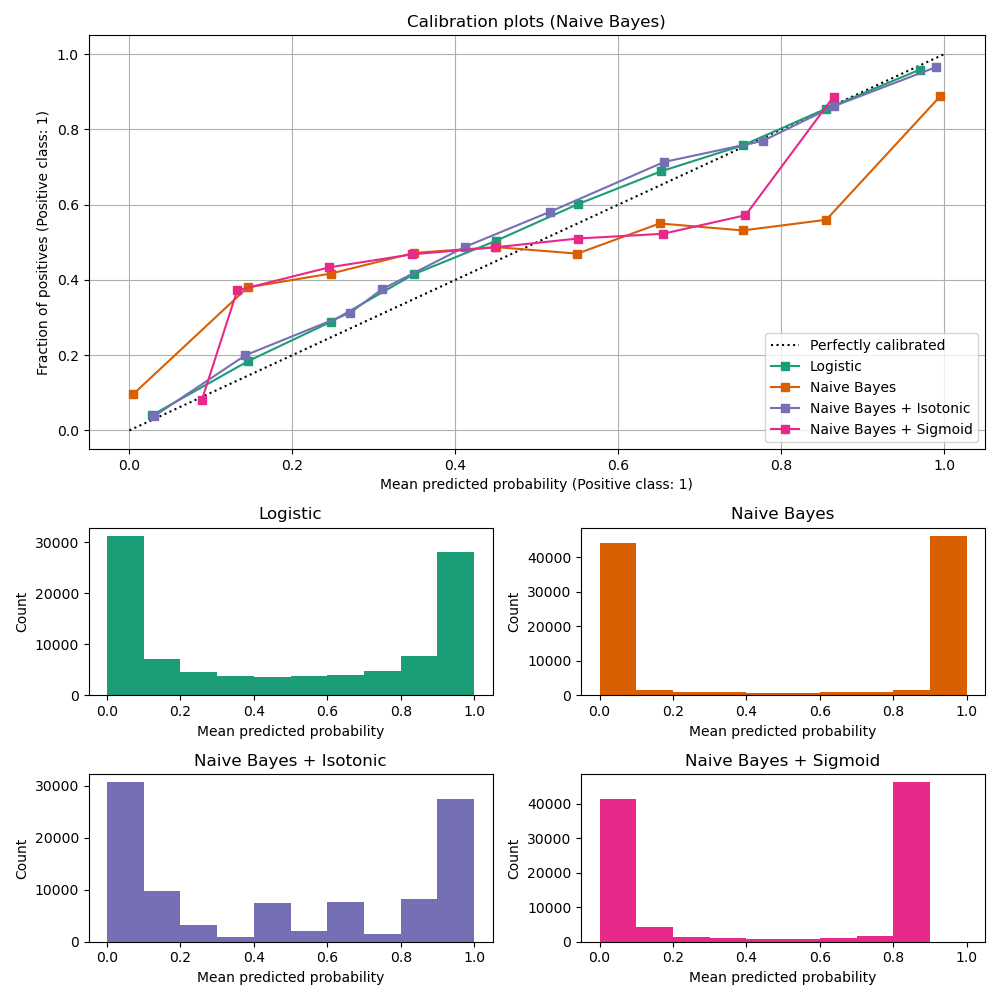
Calibration in sklearn
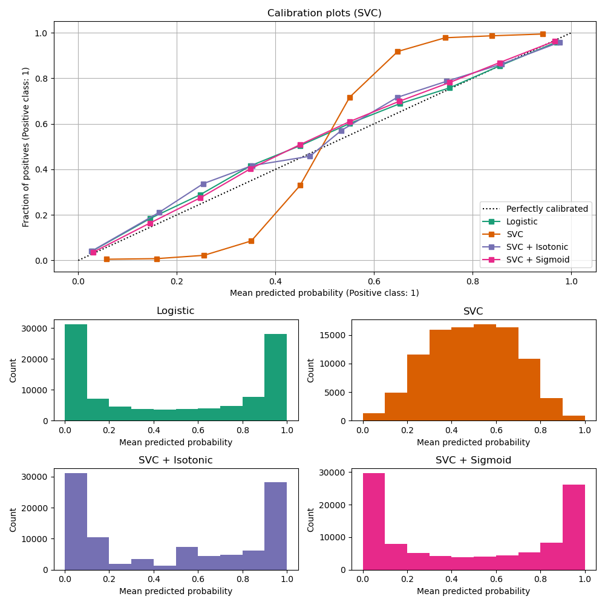
Calibration Takeaways
Reliability diagrams are a standard way to visualize calibration
ECE is a summary of what reliability diagrams show
Proper scoring rules (Log loss, Brier score) measure different aspects of probability correctness
However, proper scoring rules cannot tell us where a model is miscalibrated
Calibration is not quality: the base-rate predictor scores ECE 0. Always report it beside AUC or a proper scoring rule
Every number here depends on the binning, which papers rarely report. The rest of this section is about that
Hyperparameters of reliability diagrams
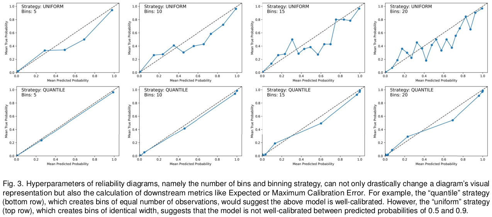
Image taken from Xenopoulos, P., Rulff, J., Nonato, L. G., Barr, B., & Silva, C. (2022). Calibrate: Interactive analysis of probabilistic model output. IEEE Transactions on Visualization and Computer Graphics.
Calibrate (2023)
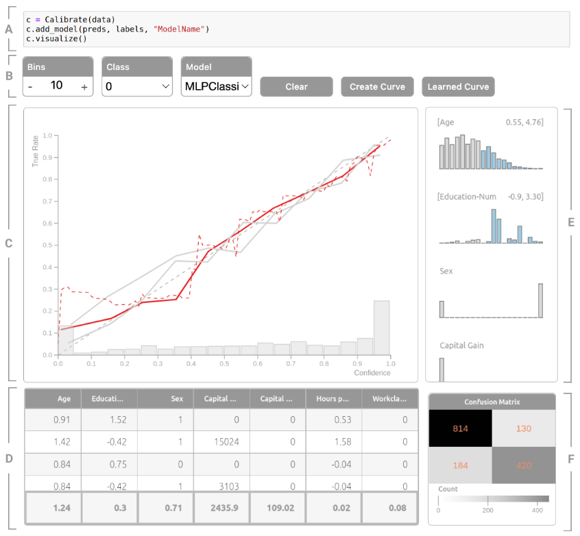
Xenopoulos, P., Rulff, J., Nonato, L. G., Barr, B., & Silva, C. (2022). Calibrate: Interactive analysis of probabilistic model output. IEEE TVCG.
Calibrate (2023) - Learned Reliability Diagram
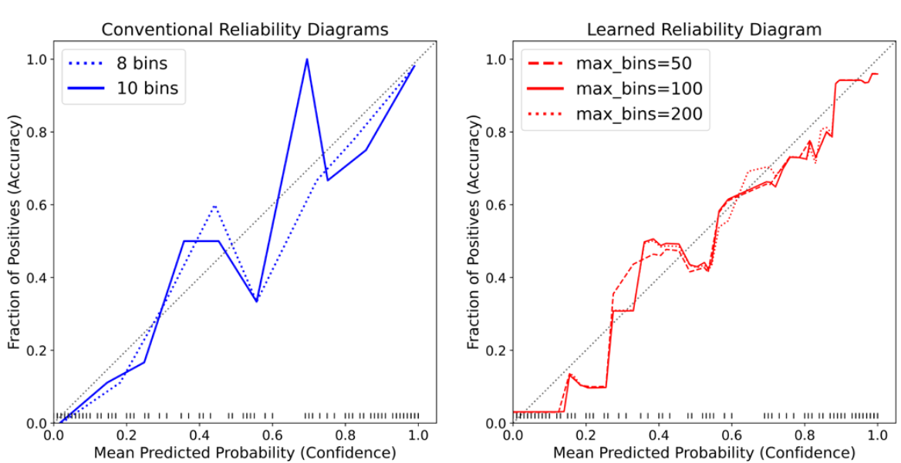
Xenopoulos, P., Rulff, J., Nonato, L. G., Barr, B., & Silva, C. (2022). Calibrate: Interactive analysis of probabilistic model output. IEEE TVCG.
Calibrate (2023)
Xenopoulos, P., Rulff, J., Nonato, L. G., Barr, B., & Silva, C. (2022). Calibrate: Interactive analysis of probabilistic model output. IEEE TVCG.
Smooth ECE (2023)
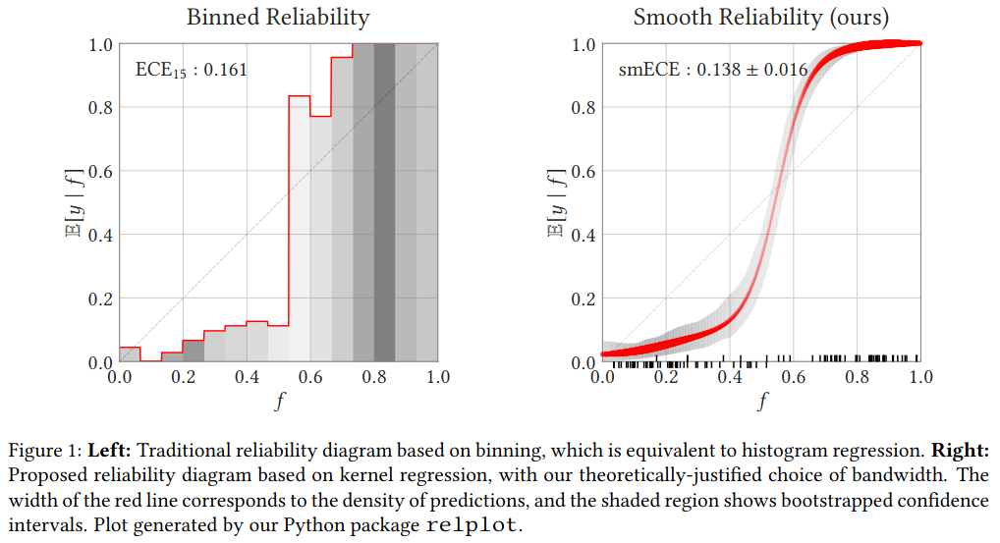
Błasiok, J., & Nakkiran, P. (2023). Smooth ECE: Principled Reliability Diagrams via Kernel Smoothing. arXiv preprint arXiv:2309.12236.
Smooth ECE (2023)
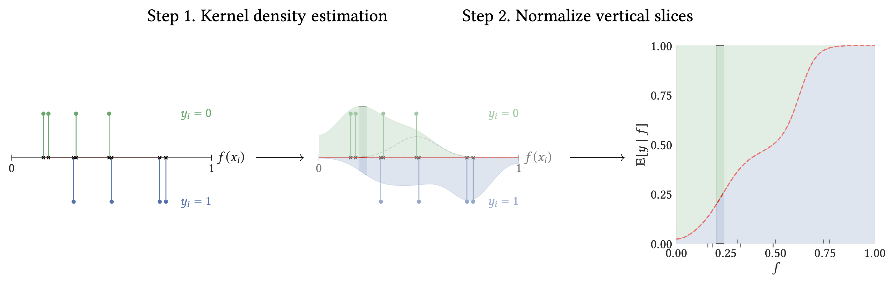
Błasiok, J., & Nakkiran, P. (2023). Smooth ECE: Principled Reliability Diagrams via Kernel Smoothing. arXiv preprint arXiv:2309.12236.
Visualizing Calibration for Multi-Class Problems
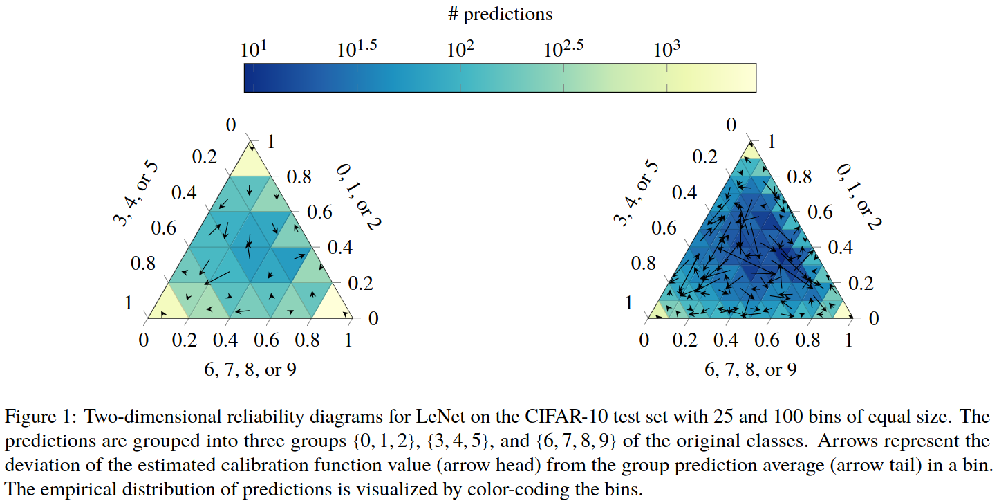
Vaicenavicius, J., Widmann, D., Andersson, C., et al. (2019). Evaluating model calibration in classification. AISTATS.
Suggested Calibration Literature
Niculescu-Mizil, A., & Caruana, R. (2005). Predicting good probabilities with supervised learning. ICML.
Nixon, J., Dusenberry, M. W., Zhang, L., Jerfel, G., & Tran, D. (2019, June). Measuring Calibration in Deep Learning. In CVPR Workshops (Vol. 2, No. 7).
Guo, C., Pleiss, G., Sun, Y., & Weinberger, K. Q. (2017). On calibration of modern neural networks. ICML.
Vaicenavicius, J., Widmann, D., Andersson, C., Lindsten, F., Roll, J., & Schön, T. (2019, April). Evaluating model calibration in classification. In The 22nd International Conference on Artificial Intelligence and Statistics (pp. 3459-3467). PMLR.
Suggested Calibration Literature
Kull, M., & Flach, P. (2015). Novel decompositions of proper scoring rules for classification: Score adjustment as precursor to calibration. ECML-PKDD, pp. 68-85.
Silva Filho, T. et al. (2020). ECML/PKDD 2020 Tutorial: Evaluation metrics and proper scoring rules. Full tutorial at classifier-calibration.github.io.
Minderer, M. et al. (2021). Revisiting the calibration of modern neural networks. NeurIPS.
Xenopoulos, P., Rulff, J., Nonato, L. G., Barr, B., & Silva, C. (2022). Calibrate: Interactive analysis of probabilistic model output. IEEE TVCG.
Błasiok, J., & Nakkiran, P. (2023). Smooth ECE: Principled reliability diagrams via kernel smoothing. arXiv. Python package:
relplot